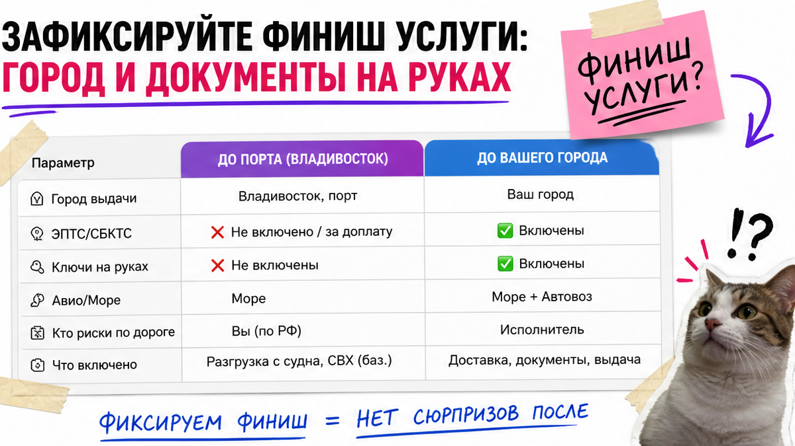
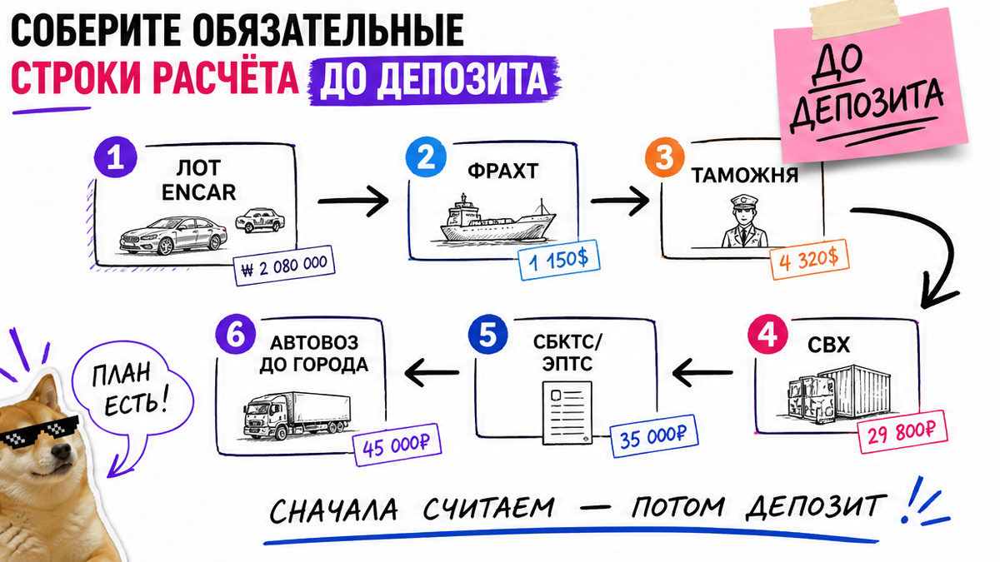
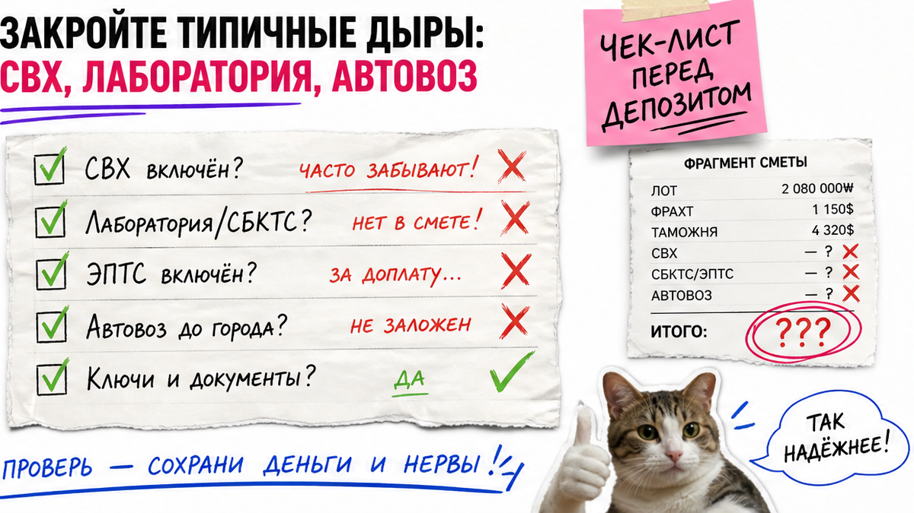

Игорь из Хабаровска увидел на Encar Kia "примерно за два с чем-то миллиона", менеджер сказал "под ключ", депозит взяли быстро. Через месяц во Владивостоке всплыли стоянка на СВХ, вывоз в лабораторию и автовоз до города – отдельно. Знакомая боль: красивая цена лота и страх доплатить после прибытия. Ниже – чеклист строк сметы до депозита, чтобы "под ключ" означало понятный финиш, а не сюрприз в порту. Результат сегодня: лист зелёных и красных строк без команды разработчиков.
У "под ключ" нет единого юридического определения – у одних выдача во Владивостоке с ЭПТС, у других автовоз до вашего города. Цена на Encar – лот, не итог. До депозита соберите смету строками: машина, Корея, фрахт, таможня и утиль, брокер, СВХ, СБКТС/ЭПТС, доставка по РФ. Отдельно спросите про вывоз в лабораторию и дни на СВХ. Проверьте финиш города до оплаты.
Encar – корейская площадка объявлений, как большой авторынок онлайн. Цифра в карточке – цена продавца в Корее, а не "сел и поехал" в вашем городе. Мы в Авто-Сейлс во Владивостоке видим одну ошибку снова и снова: человек сравнивает рекламу "под ключ" с чужим прайсом и вносит депозит, не сверив список работ.
Свежий факт: даже строка "СБКТС + ЭПТС" часто не включает вывоз машины с СВХ в лабораторию. СВХ – склад временного хранения в порту, где авто ждёт таможню и документы. Пока бумаги не готовы, копятся дни хранения. Чеклист ниже – про состав обещания, а не про статичный калькулятор пошлин.

Какую боль закрываем: вы думаете, что "под ключ" = уже на учёте в ГИБДД и с ОСАГО. У части компаний учёт входит, у других – нет. Решает перечень в договоре, а не слоган.
На пальцах финиш – три ответа. Куда отдадут машину: Владивосток или ваш город? Что на руках: ключи, документы, электронный ПТС (ЭПТС)? Кто делает учёт и ОСАГО – вы или исполнитель?
| Что обещают | Частый финиш | Что уточнить до депозита |
|---|---|---|
| "Под ключ с растаможкой" | Выдача во Владивостоке после таможни и ЭПТС | Входит ли автовоз до вашего города |
| "Под ключ с доставкой" | Автовоз или ж/д до региона | Адрес выгрузки и кто принимает машину |
| "Всё включено до ключей" | Разный пакет у разных фирм | ГИБДД и ОСАГО – в смете или отдельно |
Сделайте запись: город выдачи и документы на руках. Не делайте вывод, что учёт в ГИБДД "по умолчанию", только потому что так у конкурента.

Какую боль закрываем: путаете цену лота на Encar с суммой "пригон авто из Кореи под ключ". Например, машина в Корее – одна цифра, а путь до выдачи добавляет ещё расходы.
Workflow до выдачи:
Лот на Encar → Выкуп и расходы по Корее → Море до Владивостока → Таможня и утильсбор → Брокер и СВХ → СБКТС и ЭПТС → (если нужно) ЭРА-ГЛОНАСС → Доставка по РФ → Выдача
СБКТС – свидетельство, что конструкция безопасна для дорог РФ; без него обычно не получить ЭПТС. ЭРА-ГЛОНАСС – блок экстренного вызова, часто отдельной строкой. Утильсбор и таможню считают индивидуально – здесь только карта строк, без готовых сумм.
Сделайте письменную смету до оплаты. Не делайте ставку на чужой калькулятор прошлых лет. Добавьте в лист каждую красную дыру отдельно.

Какую боль закрываем: боитесь доплат на СВХ и в лаборатории после прибытия. Типичная ошибка – услышать "СБКТС в цене" и решить, что логистика документов тоже закрыта.
На практике у брокеров Владивостока хранение на СВХ, подача к досмотру и вывоз в лабораторию часто разведены. Строка "СБКТС + ЭПТС" может не включать вывоз со склада. Автовоз до вашего города почти всегда отдельная позиция.
Проверьте лимит дней СВХ письменно до депозита. Избегайте фразы "потом разберёмся в порту". Уберите из сметы надежду, что лаборатория "сама войдёт".
Какую боль закрываем: машина уже на СВХ, а вы ещё собираете паспортные данные. Чем дольше простой, тем выше риск доплат за хранение.
Растаможка на физлицо – оформление авто на вас как на частного покупателя. Точный список даёт менеджер; заранее обычно готовят паспортные данные, ИНН и согласие брокера. Из практики: задержка клиента бьёт по срокам сильнее, чем "рейс задержался".
Сделайте пакет документов до прихода судна. Не делайте сбор бумаг в день постановки на СВХ.
Какую боль закрываем: депозит внесли "за всё", а таможня и утиль оказались вторым этапом. Часто часть суммы берут до отправки из Кореи, часть – после прибытия во Владивосток.
До депозита зафиксируйте: что закрывает первый платёж, что остаётся на второй этап, и от чего суммы могут вырасти. Одна цифра без этапов – ярлык, не смета. Проверьте разбивку "до отправки / после порта".
Сделайте запрос этапов оплаты до депозита. Не делайте вид, что депозит уже равен полной оплате до выдачи.
Критерий успеха: до оплаты у вас заполнен лист (какие строки есть / каких нет) и запрос полного расчёта без сюрпризов на таможне. Получите письменный ответ по красным строкам – тогда сможете обсуждать депозит спокойно.
Шаблон: модель, год, бюджет "до ключей", город выдачи и фраза "прошу полный расчёт под ключ со всеми строками до депозита". Пишите в Telegram @Djinous – считают по вашей комплектации, не по чужой таблице.
Сделайте проход по чеклисту сверху вниз. Не делайте депозит, пока смета дырявая.
После гайда у вас рабочий лист: зелёные и красные строки, город финиша. Нет красных строк и финиш зафиксирован – можно обсуждать депозит. Дыры остались – закройте их письменно. Ориентир: один результат до FAQ – заполненный лист и запрос в чат.
Материал проверен: Редакция Авто-Сейлс – эксперты по авто под заказ из Японии, Кореи и Китая (Владивосток).
Достоверность: строки сметы и типовые дыры сверены с разборами покупки через Encar, описаниями пакетов "под ключ" на Дальнем Востоке и брокерской практикой по СВХ/лаборатории на 15.10.2026; готовых сумм пошлин нет – расчёт по модели у менеджера.
Цена на Encar – лот у продавца в Корее. Сумма под ключ добавляет выкуп, море, таможню и утиль, брокера, СВХ, СБКТС/ЭПТС и часто доставку по РФ. Сравнивайте не карточку, а полный список строк до вашего города.
Не всегда. У одних учёт в пакете, у других вы получаете машину с ЭПТС и ставите на учёт сами. До депозита зафиксируйте: "ГИБДД входит" или "делаю сам". То же для ОСАГО.
Можно, если сознательно берёте самовывоз во Владивостоке. Тогда услуга заканчивается на порту/складе с документами. Нужен автовоз – отдельная строка; без неё "с доставкой" в рекламе не считается выполненным.
СВХ – склад временного хранения, где авто ждёт таможню и документы. Базовое размещение может входить в пакет, а дни сверх лимита или вывоз в лабораторию – уже доплата. Спросите лимит дней до депозита.
Платежи зависят от года, объёма двигателя, топлива и актуальных ставок. Статичная таблица устаревает. Берите расчёт по модели у менеджера; здесь – только карта строк сметы.
Пришлите модель, год, бюджет "до ключей" и город выдачи. Спросите: какие строки в смете, включены ли СВХ и вывоз в лабораторию, где финиш, как выглядит график платежей.
Ориентир из открытых разборов: море часто занимает порядка двух-трёх недель, плюс таможня, лаборатория и ЭПТС. Точные сроки зависят от рейса и ваших бумаг – закладывайте буфер.